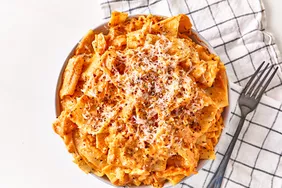

Lasanga

Description
Lasanga is a traditional Italian dish made with layers of pasta, meat, cheese, and sauce.
Ingredients
- Lasagna noodles
- Ground beef
- Ricotta cheese
- Mozzarella cheese
- Parmesan cheese
- Marinara sauce
- Eggs
- Garlic
- Onion
- Olive oil
- Salt
- Pepper
- Italian seasoning
- Fresh basil
- Fresh parsley
Steps
- Preheat the oven to 375°F (190°C).
- Cook the lasagna noodles according to package instructions.
- In a skillet, heat olive oil over medium heat. Add chopped onion and garlic, and sauté until translucent.
- Add ground beef to the skillet and cook until browned. Drain excess fat.
- Stir in marinara sauce, Italian seasoning, salt, and pepper. Simmer for 10 minutes.
- In a bowl, mix ricotta cheese, eggs, parsley, and salt.
- Spread a layer of meat sauce on the bottom of a baking dish.
- Add a layer of noodles, followed by a layer of ricotta mixture, then mozzarella cheese.
- Repeat layers until all ingredients are used, finishing with meat sauce and mozzarella on top.
- Cover with foil and bake for 25 minutes. Remove foil and bake for an additional 15 minutes until cheese is bubbly.
- Let it cool for 10 minutes before serving. Garnish with fresh basil.
Home